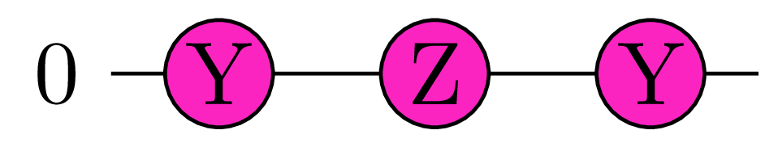
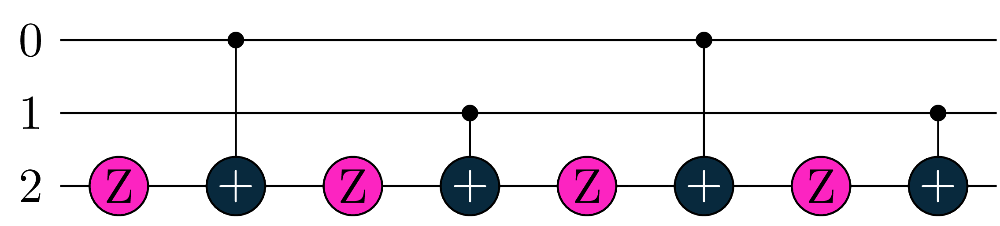
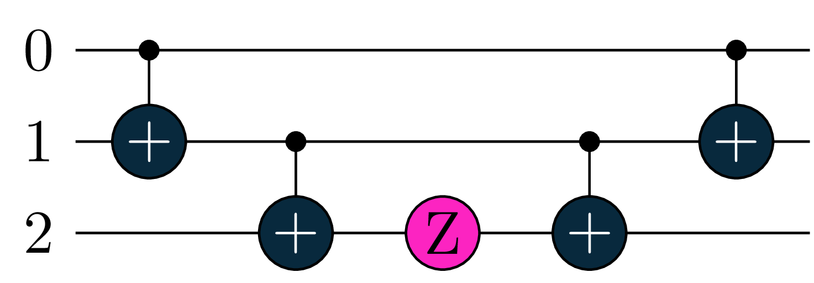
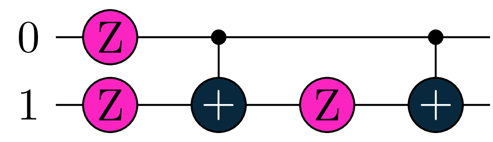
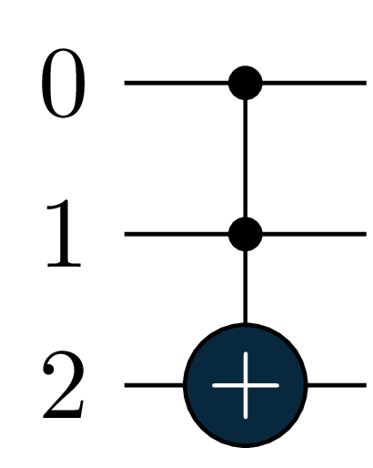
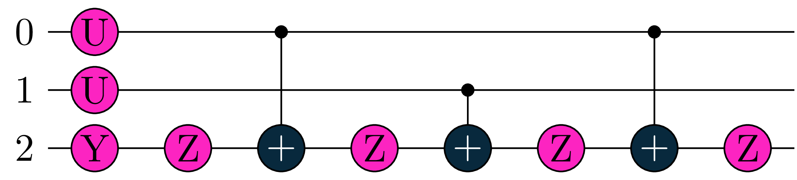
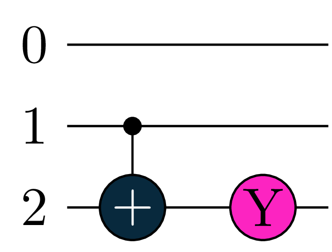

### first import all relevant modules
from numpy import pi
import tequila as tq
import tequila.circuit.gates as gates
from tequila import QCircuitA short tutorial on Gate Generators and Tequila’s compilation procedure
In this tutorial:
1. we introduce the concept of a generator and how it is used in Tequila
2. briefly describe how native compiler in Tequila works
Every unitary gate \(U\) can be written as: \[ U = e^{-i \frac{a}{2} G} \]
where \(G\) is a Hermitian matrix (i.e \(G = G^{\dagger}\)) called the generator of \(U\) and \(a\) is an angle
Tequila uses above representation with the convention that
- \(a\) equals
U.parameterif gate \(U\) is parametrized with an angle \(a\) - or, if the gate \(U\) is not parametrized, then \(a = \pi\) holds per default
To avoid confusion, \(U\) should be of type QGateImpl
Usually in Tequila, one has high level access to QCircuit data structure
Let’s look at some simple examples for one-qubit gates
Rotation around Z - axis of angle \(a\): \(\hspace{0.7em} R_z(a) = e^{-i \frac{a}{2} Z}\)
\(a\) -th power of Z: \(\hspace{1.5em} Z = e^{-i \frac{\pi}{2} (Z - 1)} \implies Z^a = e^{-i \frac{a \cdot \pi}{2} (Z - 1)} = e^{i \frac{a \cdot \pi}{2}} \cdot R_z(a \cdot \pi)\)
qc = QCircuit()
qc += gates.Rz(pi / 2, 0)
qc += gates.Z(0, power=0.5)
# let's see how the data structure looks like
for U in qc.gates:
G = U.generator
print(f"Gate: {U.name} | Generator {G}")- 1
- create a circuit object
- 2
- add a rotation Z gate with an angle of 90 deg.
- 3
- add a Z gate with a power of 0.5
- 4
- print the gates with their names and generator values
Gate: Rz | Generator +1.0000Z(0)
Gate: Z | Generator +1.0000Z(0)-1.0000Going forward, a controlled - \(U\) gate with \(k\) qubits as controls is written as:
\[ U_c = e^{-i \frac{a}{2} \cdot |1 \rangle \langle 1 |^{\otimes k} G} = e^{-i \frac{a}{2} \big(\frac{I - Z}{2}\big)^{\otimes k}G} \]
We can justify the above expression since if:
- any of the control qubits in state \(| \psi \rangle\) are in \(|0 \rangle\) state, then :
\[ |1 \rangle \langle 1 |^{\otimes k} G \cdot | \psi \rangle = 0 \implies U_c |\psi \rangle = |\psi \rangle \]
- all the control qubits in state \(| \psi \rangle = |c \rangle |t \rangle\) are in \(|1 \rangle\) state:
\[ |1 \rangle \langle 1 |^{\otimes k} G \cdot | \psi \rangle = |1 \rangle^{\otimes k} G |t \rangle \implies U_c |\psi \rangle = |1 \rangle^{\otimes k} U |t \rangle \]
In Tequila:
qc = gates.Rx(pi / 2, control=0, target=1)
for U in qc.gates:
G = U.generator
Gc = U.make_generator(include_controls=True)
print('\nGate: ', U.name,
'\n | Is controlled? ', U.is_controlled(),
'\n | Generator:', G,
'\n | Full Generator: ', Gc)- 1
- add a conrtolled X rotation of 90 deg. with. Control qubit is the first and target the second
- 2
- collect generators parameters of each generator in circuit qc
- 3
- collect parameters of full generators in qc
- 4
- output the parameters of each gate in circuit qc
Gate: Rx
| Is controlled? True
| Generator: +1.0000X(1)
| Full Generator: +0.5000X(1)-0.5000Z(0)X(1)Gates decomposition
In this section we explain the gates decomposition used by Tequila’s compiler.
As a start, for backends that do not natively support power gates (eg. qiskit), we decompose them as an equivalent up to a global phase sequence of rotations (see above for \(Z^a\)).
A special case is the Hadamard gate:
\(\hspace{0.5em} H = R_y(\frac{\pi}{4}) \cdot Z \cdot R_y(-\frac{\pi}{4}) \implies H^a = e^{i \frac{a \cdot \pi}{2}} \cdot R_y(\frac{\pi}{4}) \cdot R_z(a \cdot \pi) \cdot R_y(-\frac{\pi}{4})\)
qc = gates.H(target=0, power=0.5)
compiled = tq.compile(qc, backend='qiskit')
- 1
- create a squared hadamard gate with a target qubit
- 2
-
compile the circuit
qc, containing only one hadamard gate, - this will decompose the gate as shown above to rotations and paulis

Printing the object compiled.circuit should yield a circuit like the one above.
Note that as a part of the circuit compilation process Tequila will decompose the \(H\) gate a combination of parametrized rotation gates \(R_x, R_y, R_z\).
A print will show the decomposed version (and not a \(H\) gate)
Remember quantum circuits are written in reversed order than matrix multiplication. Also notice that the global phase is dropped in the decomposition.
Regarding (multi) controlled gates, Tequila decompose everything in terms of \(CNOT\) and single qubit - rotations if a backend does not support the corresponding operation.
Let’s start first with a controlled - \(Z\) rotation with \(k\) qubits acting as controls. All other cases will be reduced to it.
\[ CRz_k(a) = e^{-i \frac{a}{2} \big(\frac{I - Z}{2}\big)^{\otimes k} Z} = \prod_{m = 0}^{k} \prod_{\sigma \in C_{k, m}} e^{-i \frac{(-1)^{m} \cdot a/2^k}{2} Z_{\sigma(1)} Z_{\sigma(2)} .. Z_{\sigma(m)} Z} \]
The idea is to sort the terms in \(\big(I - Z\big)^{\otimes k}\) expansion in Gray code order. In this order, when we synthesize the individual Exponential-Pauli gates, consecutive \(CNOT\) gates meet and cancel out.
For example:
\[ CRz_2(a) = e^{-i \frac{a}{2} \big(\frac{I - Z}{2}\big)^{\otimes 2}} = e^{-i \frac{a/4}{2} I_0 I_1 Z} \cdot e^{i \frac{a/4}{2} Z_0 I_1 Z} \cdot e^{-i \frac{a/4}{2} Z_0 Z_1 Z} \cdot e^{i \frac{a/4}{2} I_0 Z_1 Z} \]
qc = gates.Rz(pi, control=[0, 1], target=2)
compiled = tq.compile(qc, backend='qiskit')
print(compiled.circuit)- 1
- create a parametrized rotation \(Z\) gate with two controls and an angle of 180 deg.
- 2
- compile the circuit - this will decompose it to a sequence of parametrized rotation \(Z\) gates and \(CNOT\) gates
- 3
- display the compiled circuit
q_0: ─────────────■────────────────────────────────■───────────────────
│ │
q_1: ─────────────┼────────────────■───────────────┼────────────────■──
┌─────────┐┌─┴─┐┌──────────┐┌─┴─┐┌─────────┐┌─┴─┐┌──────────┐┌─┴─┐
q_2: ┤ Rz(π/4) ├┤ X ├┤ Rz(-π/4) ├┤ X ├┤ Rz(π/4) ├┤ X ├┤ Rz(-π/4) ├┤ X ├
└─────────┘└───┘└──────────┘└───┘└─────────┘└───┘└──────────┘└───┘
c: 3/══════════════════════════════════════════════════════════════════

you can print the object compiled.circuit with a normal print statement in your IDE like shown in the code snippet above and expect the same circuit like the one in the graphic
Note that a print will also denote the angular parametrization of the rotations gates in each one of them. Moreover the \(CNOT\) gates are displayed as \(X\) gates, which is physically the same.
That was a lot at once.
Let’s see how the decomposition of \(e^{-i \frac{a/4}{2} Z_0 Z_1 Z}\) looks like.
qc = gates.ExpPauli(paulistring='Z(0)Z(1)Z(2)', angle=pi/4)
compiled = tq.compile(qc, backend='qiskit')- 1
- create a gate based of a given Pauli-String of \(Z\) gates parameterized with an angle of 45 deg.
- 2
- compile this gate - this will decompose it to a combination of \(CNOT\) gates and rotations

Printing compiled.circuitwill yield a circuit like the one above.
The decomposition of other terms look similar. You can write them down for yourself as a verification and see how the \(CNOT\) gates cancel out
Controlled - Phase gates:
\[ CP_k(a) = e^{i a \big(\frac{I - Z}{2}\big)^{\otimes k} \frac{I - Z}{2}} = e^{i \frac{a}{2} \big(\frac{I - Z}{2}\big)^{\otimes k}} \cdot e^{-i \frac{a}{2} \big(\frac{I - Z}{2}\big)^{\otimes k} Z} = CP_{k-1}(\frac{a}{2}) \cdot CRz_k(a)\]
The above equality provides a recurrent way to decompose \(CP_k(a)\) with base case \(CP_0(a) = Phase(a) = e^{i\frac{a}{2}} R_z(a)\)
qc = gates.Phase(phase=pi, control=0, target=1)
compiled = tq.compile(qc, backend='qiskit')- 1
- create a controlled gate in qubit 1. with control qubit in 0. and a phase of 180 deg.
- 2
- compile this gate - thus decompose it to rotations and \(CNOT\)s

Printing compiled.circuit will output a circuit like the one above
Controlled power gates are equivalent to controlled - phase gates after a basis change. Specifically:
- \(X = H Z H \implies CX_k^a = H \cdot CP_k(a \cdot \pi) \cdot H\)
- \(Y = R_x(- \frac{\pi}{2}) \cdot Z \cdot R_x(\frac{\pi}{2}) \implies CY_k^a = R_x(- \frac{\pi}{2}) \cdot CP_k(a \cdot \pi) \cdot R_x(\frac{\pi}{2})\)
It is worth mentioning here that Tequila decomposes gates only when it is needed, i.e either a backend does not support a gate type or a translation between Tequila and backend object is not supported.
For example, a Toffoli gate in cirq backend will not be decomposed further:
qc = gates.Toffoli(0, 1, 2)
compiled = tq.compile(qc, backend='cirq')- 1
- create a Toffoli gate with controls in qubits 1 and 2 and target in qubit 2
- 2
- compile this gate - since this gate is recognized by the backend it won’t get decomposed to rotations and \(CNOT\) gates

Printing compiled.circuit should result in the above circuit
But with qiskit we have to decompose it in terms of one and two qubit gates.
qc = gates.Toffoli(0, 1, 2)
compiled = tq.compile(qc, backend='qiskit')
- 1
- create the same Toffoli gate as before
- 2
- compile the gate with a different backend “qiskit”. Since this backend doesn’t recognize this gate it will decompose it to smaller gates


Once again printing the compiled.circuitwould yield the above circuits